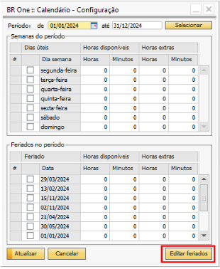
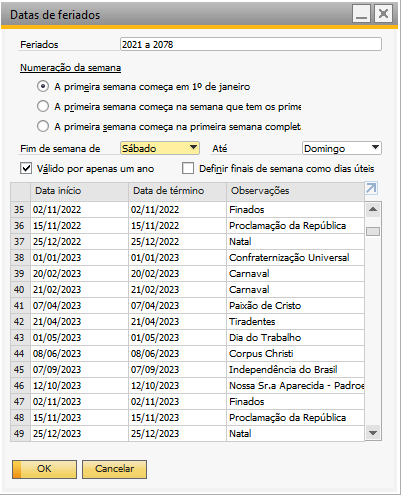
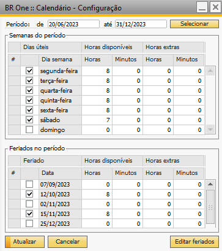
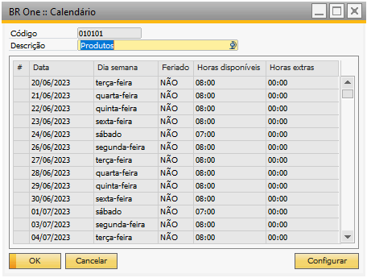

Calendário
Para acessar o cadastro de Calendário é necessário ir no menu:
Administração -> Definição -> Produção -> Calendário

A tela é aberta no modo de Procurar, para adicionar deve ativar o botão Adicionar ou Ctrl+A, a tela ficará no modo de adição:

Para adição dos dados é necessário informar o codigo e descrição:

Adicione o cadastro e retorne nele para realizar a configuração das datas, clique no botão configurar:

Será aberto a tela de configuração das datas:

Deverá ser informado o período e carga horária de acordo com as necessidade da empresa.

Exemplo:
Período: de 20 de junho de 2023 até 31 de dezembro de 2023

Deverá selecionar as flags dos dias da semana em que a empresa trabalha e informar a carga horária disponiveis e extras.

Selecionando o Campo inferior esquerdo será aberto a tela de “Datas de feriados”
O Periodo de feriados dentro do periodo de datas informadas serão listados de acordo com o cadastro de feriados do SAP.
{kind=link}
Deverão ser marcados com a flag os feriados que serão trabalhados e informado a carga horaria.
{kind=link}
Selecionar Atualizar, assim o cadastro será salvo:
{kind=link}
É importante ter pelo menos 2 calendários cadastrados:
Compras: Utilizado no MRP
Produção: Utilizado no cadastro do centro de trabalho, grupo de recursos e recursos.
Esse cadastro é essencial para funcionamento dos cálculos das datas na Ordem de Produção e MRP.